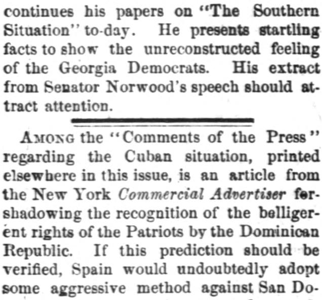
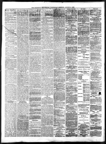

Airoo the "Comments of the Press" regarding the Cuban situation, printedEntre los «Comentarios de la prensa» relativos a la situación cubana, impreso
National Republican. Washington City (D.C.), August 11, 1875. Page 2. View the originalVer el original


See the full pageVer la página completaThe National Republican noted press reports suggesting that the Dominican Republic might officially recognize the belligerent rights of Cuban patriots fighting against Spain. The paper speculated that such a move would prompt aggressive Spanish countermeasures against Santo Domingo, questioning what obligations the United States would have under those circumstances.El National Republican se hizo eco de informaciones de prensa que sugerían que la República Dominicana podría otorgar reconocimiento oficial al estatuto de beligerancia de los patriotas cubanos que combatían contra España. El rotativo especuló con que semejante medida desataría enérgicas represalias militares españolas contra Santo Domingo, preguntándose qué obligaciones asumirían los Estados Unidos ante tal escenario.
FULL TEXT:TEXTO COMPLETO:
The Baltimore Gazette says “Alexander H. Stephens is the very man the South repudiates.” This will be news to a large number of the Confederate ex-Vice President's admirers who propose to keep him in public office as long as he lives.The Baltimore Gazette dice «Alexander H. Stephens es el hombre mismo que el Sur repudia.» Esto será noticia para un gran número de admiradores del ex Vicepresidente confederado que se proponen mantenerlo en cargo público mientras viva.
A reliable contributor from the South continues his papers on “The Southern Situation” to-day. He presents startling facts to show the unreconstructed feeling of the Georgia Democrats. His extract from Senator Norwood's speech should attract attention.Un confiable colaborador del Sur continúa hoy sus artículos sobre «La Situación del Sur». Presenta hechos sorprendentes para mostrar el sentimiento no reconstruido de los demócratas de Georgia. Su extracto del discurso del Senador Norwood debería atraer atención.
Among the “Comments of the Press” regarding the Cuban situation, printed elsewhere in this issue, is an article from the New York Commercial Advertiser for-shadowing the recognition of the belligerent rights of the Patriots by the Dominican Republic. If this prediction should be verified, Spain would undoubtedly adopt some aggressive method against San Domingo to prevent the insurgents from realizing any benefit from such a recognition. What would be the duty of the United States under such circumstances?Entre los «Comentarios de la Prensa» referentes a la situación cubana, impresos en otra parte de esta edición, hay un artículo del New York Commercial Advertiser presagiando el reconocimiento de los derechos beligerantes de los Patriotas por la República Dominicana. Si esta predicción se verificara, España indudablemente adoptaría algún método agresivo contra Santo Domingo para impedir que los insurgentes realicen beneficio alguno de tal reconocimiento. ¿Cuál sería el deber de los Estados Unidos bajo tales circunstancias?
P. I. K., the Weeping Willow of the Wissahickon, is soon to be heard from again. Anent this, the Philadelphia Evening Bulletin says:P. I. K., el Sauce Llorón del Wissahickon, pronto se sabrá de él de nuevo. A este respecto, el Philadelphia Evening Bulletin dice:
“Judge Kelley has written another speech upon the financial question and he is going out to Ohio during the present week to deliver it in behalf of the Democratic party. And yet this man, who did not find it convenient to help the Republican party in his own city and State during the last campaign, will sit in the next Congress as the representative of a Republican district. He does not represent the views of his constituents, and he is not in sympathy with his party; and yet he has not a sufficient amount of self-respect, or enough regard for decency, to resign his seat in the House so that his constituents may have their rights. We have one consolation under the circumstances, and that is that the Democrats will certainly be defeated in Ohio, and then,«El juez Kelley ha escrito otro discurso sobre la cuestión financiera y va a salir hacia Ohio durante la presente semana para pronunciarlo en nombre del partido Demócrata. Y sin embargo este hombre, que no encontró conveniente ayudar al partido Republicano en su propia ciudad y Estado durante la última campaña, se sentará en el próximo Congreso como representante de un distrito Republicano. No representa las opiniones de sus constituyentes, y no simpatiza con su partido; y sin embargo no tiene una cantidad suficiente de respeto propio, o suficiente consideración por la decencia, para renunciar su asiento en la Cámara para que sus constituyentes tengan sus derechos. Tenemos un consuelo bajo las circunstancias, y es que los Demócratas ciertamente serán derrotados en Ohio, y entonces,